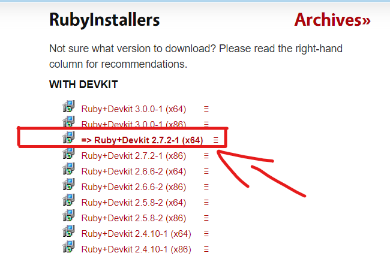
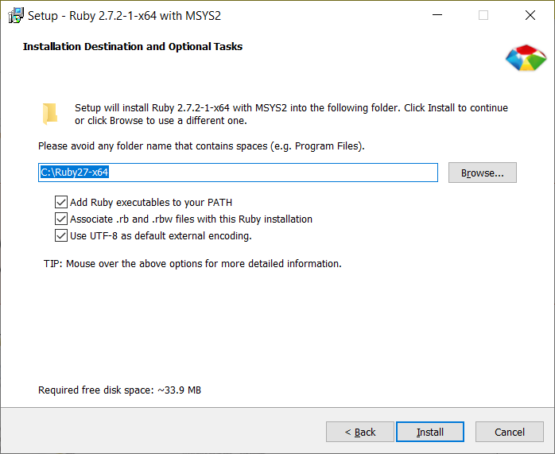
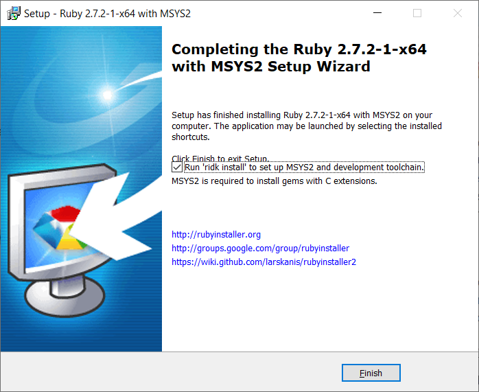
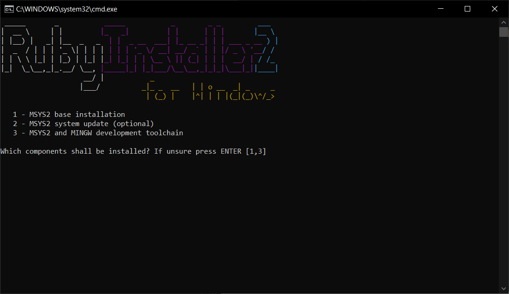
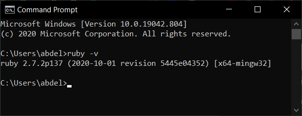
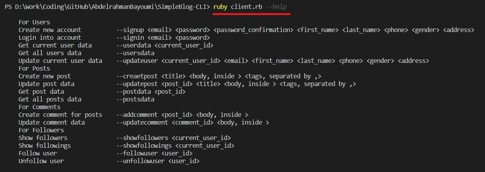

📝 Simple Blog CLI
Simple Blog command-line interface (CLI)
Requirements
- Ruby Language
How To Install Ruby in Windows (click to expand!)
1. Go to Ruby Installer in your web browser. rubyinstaller 2. go to download 3. Click Ruby+Devkit 2.7.2-1 (x64). 
4. Make sure to check (Add Ruby Executables to Your PATH and Associate .rb and .rbw Files with This Ruby Installation) 
5. Click Finish 
6. Then a command line window should be opened, Just click Enter for default configurations 
7. Now Ruby is installed fine .. to check it type "ruby -v" 
💡 Features
- Users
- Create new account
- Login into account
- Get current user data
- Get all users data
- Update current user data
- Posts
- Create new post
- Update post data
- Get post data
- Get all posts data
- Comments
- Create comment for posts
- Update comment data
- Followers
- Show followers
- Show followings
- Follow user
- Unfollow user
Getting Started
Operations:
ruby client.rb --help

سبحَانَكَ اللَّهُمَّ وَبِحَمْدِكَ، أَشْهَدُ أَنْ لا إِلهَ إِلأَ انْتَ أَسْتَغْفِرُكَ وَأَتْوبُ إِلَيْكَ